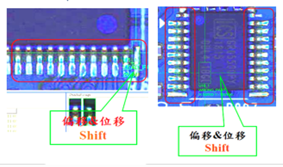

元件位移指的是元件未正確放置於預定位置，導致焊點偏移、焊料無法正確包覆引腳，甚至影響導通。
可能原因包含貼裝機偏移、吸嘴異常、錫膏偏印、PCB翹曲或元件尺寸誤差。
依據 IPC Class 2 規範，只要焊接仍可導通且無機械風險，部分偏移可接受；但若導通不良或翹腳，則判為 Defect。
| 類別 | 判定說明 |
|---|---|
| ✅ Target | 元件置中，兩端對稱覆蓋於焊墊上 |
| ✔ Acceptable | 偏移輕微但仍完整覆蓋焊墊並導通良好 |
| ❌ Defect | 偏移導致引腳懸空、導通不良、焊點無包覆 |
左：元件居中貼合；右：元件偏移焊墊，造成接觸不良風險
